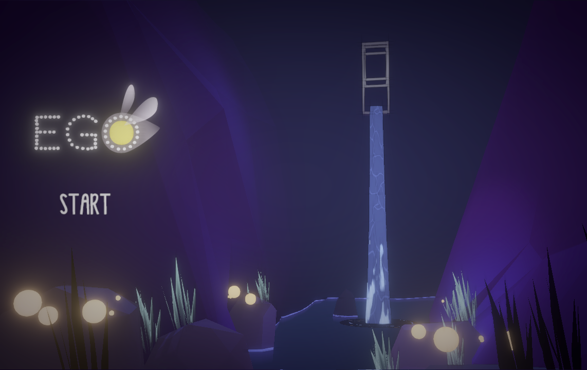
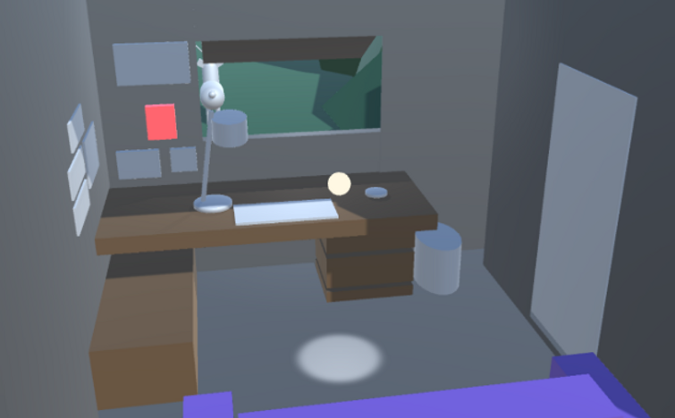
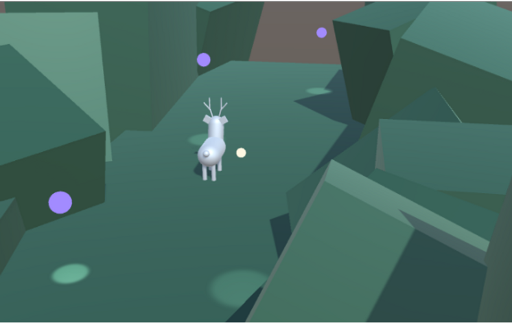
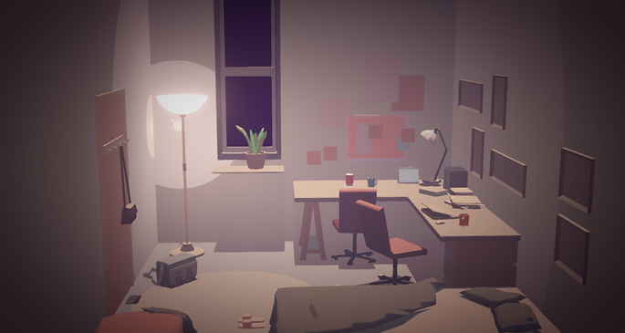
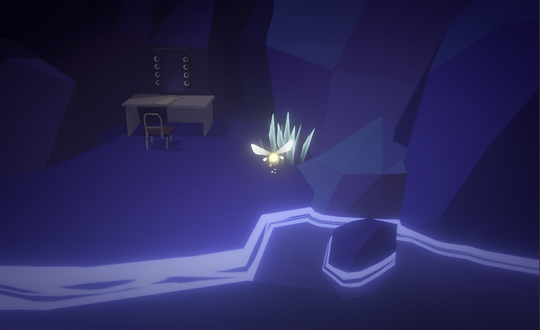
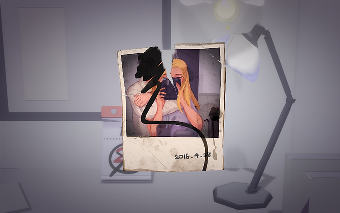

EGO

EGO PC ENVIRONMENTAL STORYTELLING GAME
EGO is a narrative game about a story between a young couple. In this game, we aim to create a surreal world that represents the main character's mind, where in this world the main character is the firefly and her partner is a deer. Without any text, the story is told by its beautiful visual art, sound design and narrative puzzles that capture the moments in this relationship, from their meet to their breakup.
Engine: Unity
Role: Lead Game Design, Level Design, Producer
Collaborator: Xin Hu, Salter Liu, Shirley Huang
Design Goal
We would like to design a multi-layer story. However, instead of directly presenting the story, we want players to explore the game world more and discover the underlying story by themselves. Therefore, we decided to use only visual, sound, and puzzle instead of texts and words to tell the story.
To let players have the immersive experience, we put a lot of efforts into tuning 3C. Eventually, we have a fixed camera angle and free aspect in different conditions and simple character control.




Issue & Iteration
Since we did not want to use any text in the game, so our main issue is about telling the story hidden behind this world. Players can understand the relationship between the firefly and the deer, but hardly can they tell they are the couple.
We iterated several methods to make the story more explicitly, and eventually, we created an album system. Players get a photo after solving each puzzle so that they can get more information on the relationship between the couple, this system bridges the two stories we want to talk about
